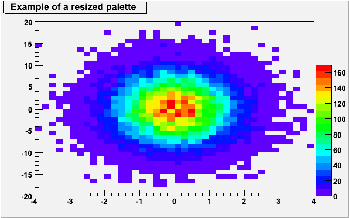
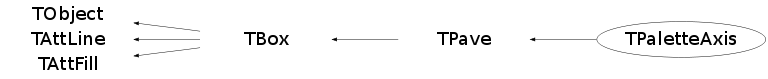

class TPaletteAxis: public TPave
The palette painting class
The TPaletteAxis is automatically created drawn when drawing a 2-D histogram when the option "Z" is specified.
A TPaletteAxis object is added to the histogram list of functions and can be retrieved doing:
TPaletteAxis *palette = (TPaletteAxis*)h->GetListOfFunctions()->FindObject("palette");
then the pointer palette can be used to change the pallette attributes.
Because the palette is created at painting time only, one must issue a:
gPad->Update();before retrieving the palette pointer in order to create the palette. The following macro gives an example.
{kind=link}

{
TCanvas *c1 = new TCanvas("c1","c1",600,400);
TH2F *h2 = new TH2F("h2","Example of a resized palette ",40,-4,4,40,-20,20);
Float_t px, py;
for (Int_t i = 0; i < 25000; i++) {
gRandom->Rannor(px,py);
h2->Fill(px,5*py);
}
gStyle->SetPalette(1);
h2->Draw("COLZ");
gPad->Update();
TPaletteAxis *palette = (TPaletteAxis*)h2->GetListOfFunctions()->FindObject("palette");
palette->SetY2NDC(0.7);
return c1;
}TPaletteAxis inherits from TBox and TPave. The methods allowing to specify the palette position are inherited from these two classes.
The palette can be interactively moved and resized. The context menu can be used to set the axis attributes.
It is possible to select a range on the axis to set the min/max in z
Function Members (Methods)
public:
| TPaletteAxis() | |
| TPaletteAxis(const TPaletteAxis& palette) | |
| TPaletteAxis(Double_t x1, Double_t y1, Double_t x2, Double_t y2, TH1* h) | |
| virtual | ~TPaletteAxis() |
| void | TObject::AbstractMethod(const char* method) const |
| virtual void | TObject::AppendPad(Option_t* option = "") |
| virtual void | TObject::Browse(TBrowser* b) |
| static TClass* | Class() |
| virtual const char* | TObject::ClassName() const |
| virtual void | TObject::Clear(Option_t* = "") |
| virtual TObject* | TObject::Clone(const char* newname = "") const |
| virtual Int_t | TObject::Compare(const TObject* obj) const |
| virtual void | TPave::ConvertNDCtoPad() |
| virtual void | Copy(TObject& palette) const |
| virtual void | TObject::Delete(Option_t* option = "")MENU |
| Int_t | TAttLine::DistancetoLine(Int_t px, Int_t py, Double_t xp1, Double_t yp1, Double_t xp2, Double_t yp2) |
| virtual Int_t | DistancetoPrimitive(Int_t px, Int_t py) |
| virtual void | TPave::Draw(Option_t* option = "") |
| virtual TBox* | TBox::DrawBox(Double_t x1, Double_t y1, Double_t x2, Double_t y2) |
| virtual void | TObject::DrawClass() constMENU |
| virtual TObject* | TObject::DrawClone(Option_t* option = "") constMENU |
| virtual void | TPave::DrawPave(Double_t x1, Double_t y1, Double_t x2, Double_t y2, Int_t bordersize = 4, Option_t* option = "br") |
| virtual void | TObject::Dump() constMENU |
| virtual void | TObject::Error(const char* method, const char* msgfmt) const |
| virtual void | TObject::Execute(const char* method, const char* params, Int_t* error = 0) |
| virtual void | TObject::Execute(TMethod* method, TObjArray* params, Int_t* error = 0) |
| virtual void | ExecuteEvent(Int_t event, Int_t px, Int_t py) |
| virtual void | TObject::Fatal(const char* method, const char* msgfmt) const |
| virtual TObject* | TObject::FindObject(const char* name) const |
| virtual TObject* | TObject::FindObject(const TObject* obj) const |
| TGaxis* | GetAxis() |
| Int_t | GetBinColor(Int_t i, Int_t j) |
| Int_t | TPave::GetBorderSize() const |
| Double_t | TPave::GetCornerRadius() const |
| virtual Option_t* | TObject::GetDrawOption() const |
| static Long_t | TObject::GetDtorOnly() |
| virtual Color_t | TAttFill::GetFillColor() const |
| virtual Style_t | TAttFill::GetFillStyle() const |
| virtual const char* | TObject::GetIconName() const |
| virtual Color_t | TAttLine::GetLineColor() const |
| virtual Style_t | TAttLine::GetLineStyle() const |
| virtual Width_t | TAttLine::GetLineWidth() const |
| virtual Option_t* | GetName() const |
| virtual char* | GetObjectInfo(Int_t px, Int_t py) const |
| static Bool_t | TObject::GetObjectStat() |
| virtual Option_t* | TPave::GetOption() const |
| Int_t | TPave::GetShadowColor() const |
| virtual const char* | TObject::GetTitle() const |
| virtual UInt_t | TObject::GetUniqueID() const |
| Int_t | GetValueColor(Double_t zc) |
| Double_t | TBox::GetX1() const |
| Double_t | TPave::GetX1NDC() const |
| Double_t | TBox::GetX2() const |
| Double_t | TPave::GetX2NDC() const |
| Double_t | TBox::GetY1() const |
| Double_t | TPave::GetY1NDC() const |
| Double_t | TBox::GetY2() const |
| Double_t | TPave::GetY2NDC() const |
| virtual Bool_t | TObject::HandleTimer(TTimer* timer) |
| virtual ULong_t | TPave::Hash() const |
| virtual void | TBox::HideToolTip(Int_t event) |
| virtual void | TObject::Info(const char* method, const char* msgfmt) const |
| virtual Bool_t | TObject::InheritsFrom(const char* classname) const |
| virtual Bool_t | TObject::InheritsFrom(const TClass* cl) const |
| virtual void | TObject::Inspect() constMENU |
| void | TObject::InvertBit(UInt_t f) |
| virtual TClass* | IsA() const |
| Bool_t | TBox::IsBeingResized() const |
| virtual Bool_t | TObject::IsEqual(const TObject* obj) const |
| virtual Bool_t | TObject::IsFolder() const |
| virtual Int_t | TBox::IsInside(Double_t x, Double_t y) const |
| Bool_t | TObject::IsOnHeap() const |
| virtual Bool_t | TPave::IsSortable() const |
| virtual Bool_t | TAttFill::IsTransparent() const |
| Bool_t | TObject::IsZombie() const |
| virtual void | TPave::ls(Option_t* option = "") const |
| void | TObject::MayNotUse(const char* method) const |
| virtual void | TAttLine::Modify() |
| virtual Bool_t | TObject::Notify() |
| void | TObject::Obsolete(const char* method, const char* asOfVers, const char* removedFromVers) const |
| static void | TObject::operator delete(void* ptr) |
| static void | TObject::operator delete(void* ptr, void* vp) |
| static void | TObject::operator delete[](void* ptr) |
| static void | TObject::operator delete[](void* ptr, void* vp) |
| void* | TObject::operator new(size_t sz) |
| void* | TObject::operator new(size_t sz, void* vp) |
| void* | TObject::operator new[](size_t sz) |
| void* | TObject::operator new[](size_t sz, void* vp) |
| TPave& | TPave::operator=(const TPave&) |
| virtual void | Paint(Option_t* option = "") |
| virtual void | TBox::PaintBox(Double_t x1, Double_t y1, Double_t x2, Double_t y2, Option_t* option = "") |
| virtual void | TPave::PaintPave(Double_t x1, Double_t y1, Double_t x2, Double_t y2, Int_t bordersize = 4, Option_t* option = "br") |
| virtual void | TPave::PaintPaveArc(Double_t x1, Double_t y1, Double_t x2, Double_t y2, Int_t bordersize = 4, Option_t* option = "br") |
| virtual void | TObject::Pop() |
| virtual void | TPave::Print(Option_t* option = "") const |
| virtual Int_t | TObject::Read(const char* name) |
| virtual void | TObject::RecursiveRemove(TObject* obj) |
| virtual void | TAttFill::ResetAttFill(Option_t* option = "") |
| virtual void | TAttLine::ResetAttLine(Option_t* option = "") |
| void | TObject::ResetBit(UInt_t f) |
| virtual void | TObject::SaveAs(const char* filename = "", Option_t* option = "") constMENU |
| virtual void | TAttFill::SaveFillAttributes(ostream& out, const char* name, Int_t coldef = 1, Int_t stydef = 1001) |
| virtual void | TAttLine::SaveLineAttributes(ostream& out, const char* name, Int_t coldef = 1, Int_t stydef = 1, Int_t widdef = 1) |
| virtual void | SavePrimitive(ostream& out, Option_t* option = "") |
| void | TObject::SetBit(UInt_t f) |
| void | TObject::SetBit(UInt_t f, Bool_t set) |
| virtual void | TPave::SetBorderSize(Int_t bordersize = 4)MENU |
| virtual void | TPave::SetCornerRadius(Double_t rad = 0.2)MENU |
| virtual void | TObject::SetDrawOption(Option_t* option = "")MENU |
| static void | TObject::SetDtorOnly(void* obj) |
| virtual void | TAttFill::SetFillAttributes()MENU |
| virtual void | TAttFill::SetFillColor(Color_t fcolor) |
| virtual void | TAttFill::SetFillStyle(Style_t fstyle) |
| virtual void | SetLabelColor(Int_t labelcolor)MENU |
| virtual void | SetLabelFont(Int_t labelfont)MENU |
| virtual void | SetLabelOffset(Float_t labeloffset)MENU |
| virtual void | SetLabelSize(Float_t labelsize)MENU |
| virtual void | TAttLine::SetLineAttributes()MENU |
| virtual void | SetLineColor(Color_t linecolor)MENU |
| virtual void | TAttLine::SetLineStyle(Style_t lstyle) |
| virtual void | SetLineWidth(Width_t linewidth)MENU |
| virtual void | SetName(const char* name = "")MENU |
| static void | TObject::SetObjectStat(Bool_t stat) |
| virtual void | TPave::SetOption(Option_t* option = "br") |
| virtual void | TPave::SetShadowColor(Int_t color)MENU |
| virtual void | SetTitleOffset(Float_t titleoffset = 1)MENU |
| virtual void | SetTitleSize(Float_t titlesize)MENU |
| virtual void | TBox::SetToolTipText(const char* text, Long_t delayms = 1000) |
| virtual void | TObject::SetUniqueID(UInt_t uid) |
| virtual void | TBox::SetX1(Double_t x1) |
| virtual void | TPave::SetX1NDC(Double_t x1) |
| virtual void | TBox::SetX2(Double_t x2) |
| virtual void | TPave::SetX2NDC(Double_t x2) |
| virtual void | TBox::SetY1(Double_t y1) |
| virtual void | TPave::SetY1NDC(Double_t y1) |
| virtual void | TBox::SetY2(Double_t y2) |
| virtual void | TPave::SetY2NDC(Double_t y2) |
| virtual void | ShowMembers(TMemberInspector& insp) |
| virtual void | Streamer(TBuffer& b) |
| void | StreamerNVirtual(TBuffer& b) |
| virtual void | TObject::SysError(const char* method, const char* msgfmt) const |
| Bool_t | TObject::TestBit(UInt_t f) const |
| Int_t | TObject::TestBits(UInt_t f) const |
| virtual void | UnZoom()MENU |
| virtual void | TObject::UseCurrentStyle() |
| virtual void | TObject::Warning(const char* method, const char* msgfmt) const |
| virtual Int_t | TObject::Write(const char* name = 0, Int_t option = 0, Int_t bufsize = 0) |
| virtual Int_t | TObject::Write(const char* name = 0, Int_t option = 0, Int_t bufsize = 0) const |
protected:
| virtual void | TObject::DoError(int level, const char* location, const char* fmt, va_list va) const |
| void | TObject::MakeZombie() |
Data Members
public:
| enum { | kHasView | |
| }; | ||
| enum TPave::[unnamed] { | kNameIsAction | |
| }; | ||
| enum TBox::[unnamed] { | kCannotMove | |
| }; | ||
| enum TObject::EStatusBits { | kCanDelete | |
| kMustCleanup | ||
| kObjInCanvas | ||
| kIsReferenced | ||
| kHasUUID | ||
| kCannotPick | ||
| kNoContextMenu | ||
| kInvalidObject | ||
| }; | ||
| enum TObject::[unnamed] { | kIsOnHeap | |
| kNotDeleted | ||
| kZombie | ||
| kBitMask | ||
| kSingleKey | ||
| kOverwrite | ||
| kWriteDelete | ||
| }; |
protected:
| TGaxis | fAxis | palette axis |
| Int_t | TPave::fBorderSize | window box bordersize in pixels |
| Double_t | TPave::fCornerRadius | Corner radius in case of option arc |
| Color_t | TAttFill::fFillColor | fill area color |
| Style_t | TAttFill::fFillStyle | fill area style |
| TH1* | fH | pointer to parent histogram |
| Int_t | TPave::fInit | (=0 if transformation to NDC not yet done) |
| Color_t | TAttLine::fLineColor | line color |
| Style_t | TAttLine::fLineStyle | line style |
| Width_t | TAttLine::fLineWidth | line width |
| TString | fName | Pave name |
| TString | TPave::fName | Pave name |
| TString | TPave::fOption | Pave style |
| Bool_t | TBox::fResizing | !True if box is being resized |
| Int_t | TPave::fShadowColor | Color of the pave's shadow |
| Double_t | TBox::fX1 | X of 1st point |
| Double_t | TPave::fX1NDC | X1 point in NDC coordinates |
| Double_t | TBox::fX2 | X of 2nd point |
| Double_t | TPave::fX2NDC | X2 point in NDC coordinates |
| Double_t | TBox::fY1 | Y of 1st point |
| Double_t | TPave::fY1NDC | Y1 point in NDC coordinates |
| Double_t | TBox::fY2 | Y of 2nd point |
| Double_t | TPave::fY2NDC | Y2 point in NDC coordinates |
Class Charts
{kind=link}
{kind=link}
{kind=link}
{kind=link}

Function documentation
TPaletteAxis(Double_t x1, Double_t y1, Double_t x2, Double_t y2, TH1* h)
Palette normal constructor.
Int_t GetBinColor(Int_t i, Int_t j)
Returns the color index of the bin (i,j). This function should be used after an histogram has been plotted with the option COL or COLZ like in the following example: h2->Draw("COLZ"); gPad->Update(); TPaletteAxis *palette = (TPaletteAxis*)h2->GetListOfFunctions()->FindObject("palette"); Int_t ci = palette->GetBinColor(20,15); Then it is possible to retrieve the RGB components in the following way: TColor *c = gROOT->GetColor(ci); float x,y,z; c->GetRGB(x,y,z);
char * GetObjectInfo(Int_t px, Int_t py) const
Displays the z value corresponding to cursor position py.
Int_t GetValueColor(Double_t zc)
Returns the color index of the given z value This function should be used after an histogram has been plotted with the option COL or COLZ like in the following example: h2->Draw("COLZ"); gPad->Update(); TPaletteAxis *palette = (TPaletteAxis*)h2->GetListOfFunctions()->FindObject("palette"); Int_t ci = palette->GetValueColor(30.); Then it is possible to retrieve the RGB components in the following way: TColor *c = gROOT->GetColor(ci); float x,y,z; c->GetRGB(x,y,z);
void SavePrimitive(ostream& out, Option_t* option = "")
Save primitive as a C++ statement(s) on output stream out.